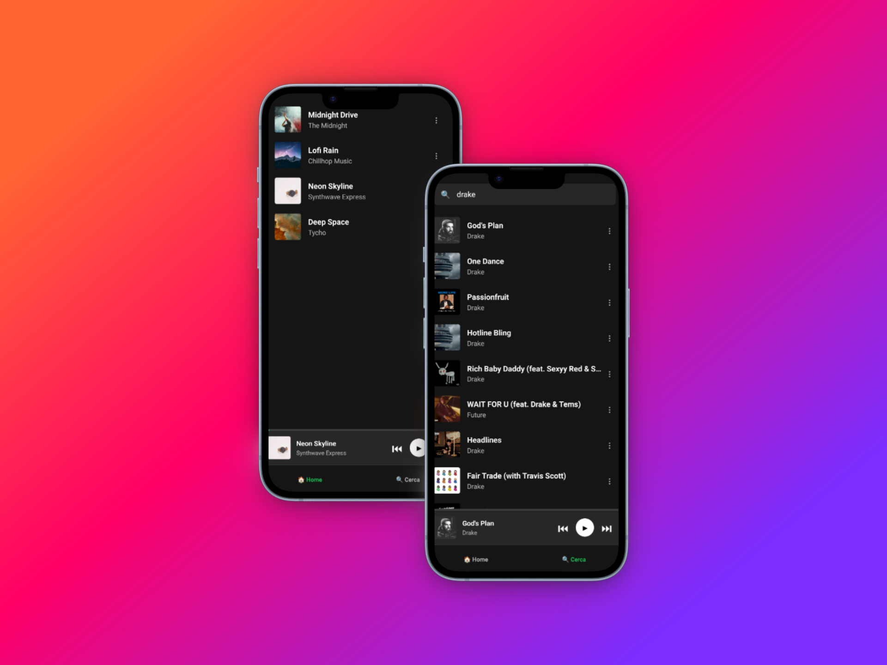

Lavoro su applicazioni reali in produzione, sviluppando funzionalità mobile, integrando API e migliorando l’esperienza utente. Costruisco prodotti concreti con attenzione a performance, struttura e qualità del codice.
React Native · JavaScript · REST APIs · API Integration · Mobile Development
React · JavaScript · HTML5 · CSS3
Docker · Java Spring Boot · SQL · NoSQL · Git · Debugging
Background analitico applicato allo sviluppo software.
Approccio orientato a:
L’obiettivo non è solo far funzionare un’applicazione, ma costruirla in modo solido e comprensibile nel tempo.

Obiettivo del progetto:
Sviluppare un player musicale cross-platform ad alte prestazioni che
integra il catalogo reale di Spotify, focalizzandosi sulla gestione
fluida dello stato globale e dell'audio in background.
Cosa dimostra:
Capacità di gestire flussi asincroni complessi, integrazione di API
esterne con autenticazione OAuth2 (Client Credentials) e
architettura mobile scalabile.
Scelte tecniche:
Email: sassijacopp@gmail.com
LinkedIn: linkedin.com/in/jacopo-sassi-31200b33b
GitHub: github.com/Jacopo-Sassi
🟢 Aperto a posizioni Junior